MAISON VISHNU
Plats indiens & sri-lankais à emporter
VILLAGE Iraty-Biarritz, 4 rue des Mésanges, 64200 BIARRITZ
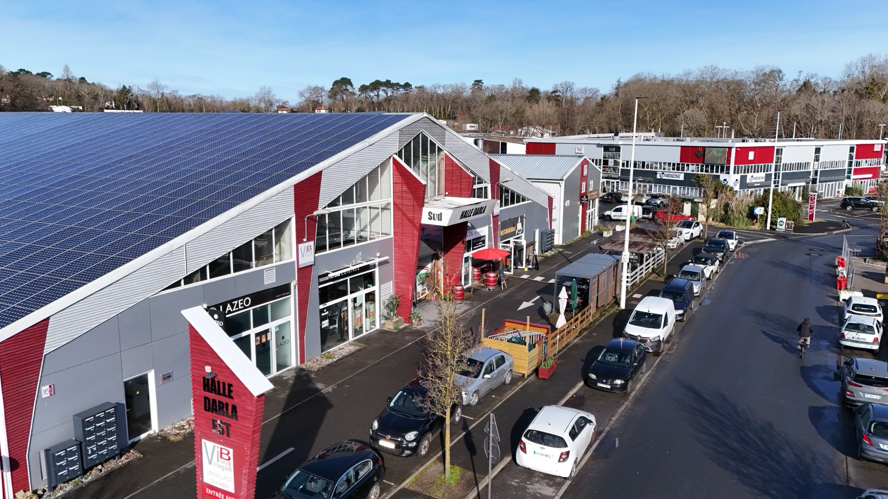
1 200+ acteurs · Commerces · Coworking · Restaurants · Services
Au cœur de la zone la plus dynamique du Pays Basque.
Notre histoire
Depuis vingt ans, le VILLAGE Iraty-Biarritz fait battre le cœur économique du Pays Basque. Plongée dans un écosystème vivant, pluriel et profondément ancré dans son territoire.

Quand vous franchissez l'entrée du VILLAGE Iraty-Biarritz, vous ne pénétrez pas dans une simple zone commerciale. Vous entrez dans un écosystème vivant et pluriel, qui a façonné depuis vingt ans l'identité économique du nord du Pays Basque.
Plus de 1 200 acteurs y exercent au quotidien : artisans, restaurateurs, professionnels de santé, créateurs, indépendants, dirigeants de PME. Chacun apporte sa pierre à cet édifice singulier où l'on entend parler basque, espagnol et français autour d'un même comptoir.
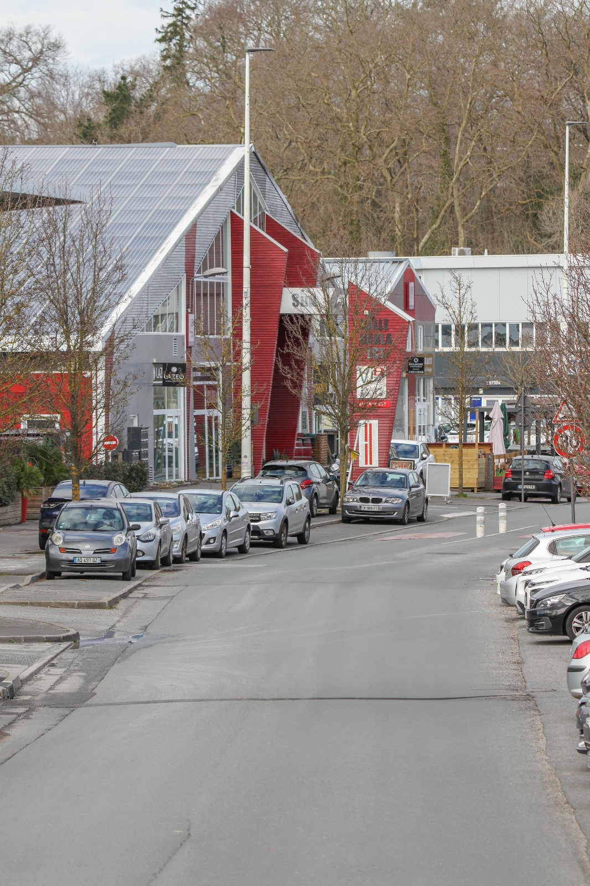
Tout commence en 2005, lorsque le quartier d'Iraty entame sa mue. Sous l'impulsion de la SEBI, ce qui n'était qu'une zone périphérique se transforme progressivement en un véritable village commercial et artisanal. Les premières halles sortent de terre, des architectes basques imaginent des espaces modulables, accessibles, à taille humaine.
Le modèle économique du Village repose sur un principe simple : maintenir des loyers accessibles pour favoriser la diversité et l'entrepreneuriat local. Implanté à cinq minutes de l'aéroport international et cinq minutes de la gare TGV, le Village offre une accessibilité rare au cœur du Pays Basque.
Cette accessibilité produit un effet rare, la mixité. Un laboratoire d'analyses médicales côtoie une boulangerie artisanale. Une rhumerie créole partage sa terrasse avec un centre de soins esthétiques. C'est cette diversité qui fait la richesse du lieu et qui, en retour, attire chaque jour des milliers d'habitants du bassin biarrot, bayonnais, hendayais et de tout le Sud Aquitain. Bienvenue dans le Village qui fait vibrer BIARRITZ.
Annuaire
Artisans, restaurateurs, créateurs et entrepreneurs partagent la même énergie dans un espace unique au cœur de BIARRITZ.
Plats indiens & sri-lankais à emporter
VILLAGE Iraty-Biarritz, 4 rue des Mésanges, 64200 BIARRITZ
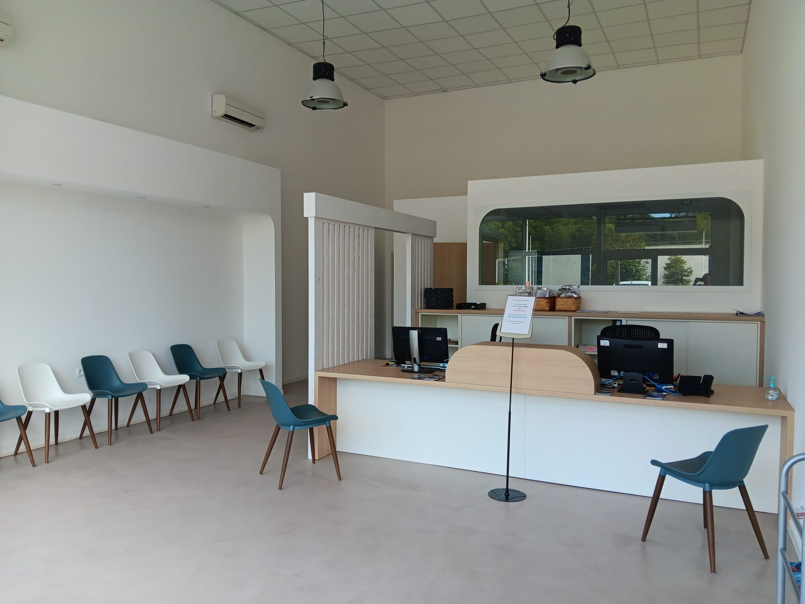
Santé & soinsLaboratoire d'analyses médicales
VILLAGE Iraty-Biarritz, 4 rue des Mésanges, 64200 BIARRITZ
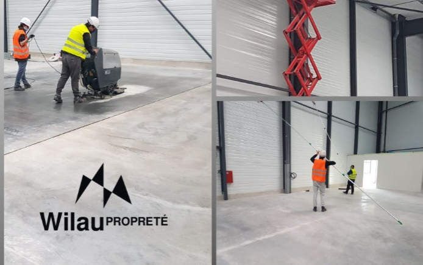
ServicesNettoyage industriel et entretien
VILLAGE Iraty-Biarritz, 4 rue des Mésanges, 64200 BIARRITZ
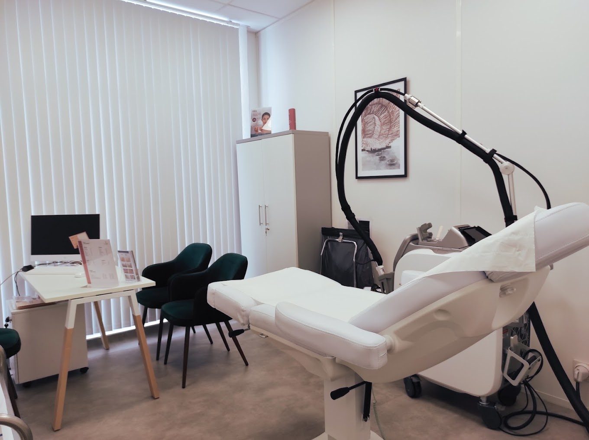
Santé & soinsÉpilation laser & soins esthétiques
VILLAGE Iraty-Biarritz, 4 rue des Mésanges, 64200 BIARRITZ
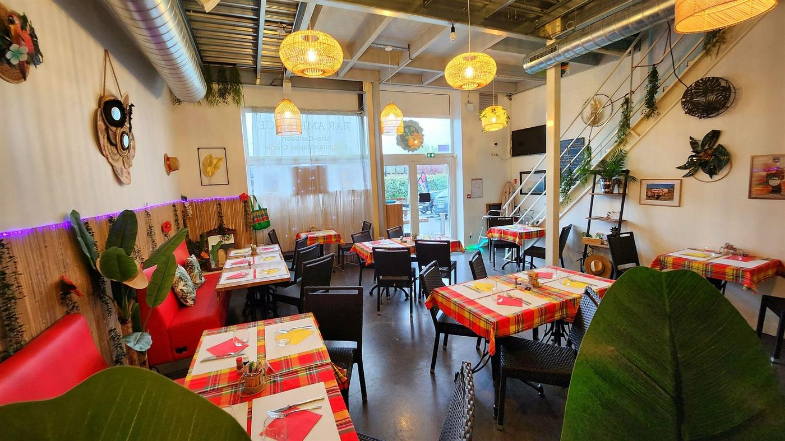
Restaurants & barsRhumerie créole, cuisine antillaise
VILLAGE Iraty-Biarritz, 4 rue des Mésanges, 64200 BIARRITZ
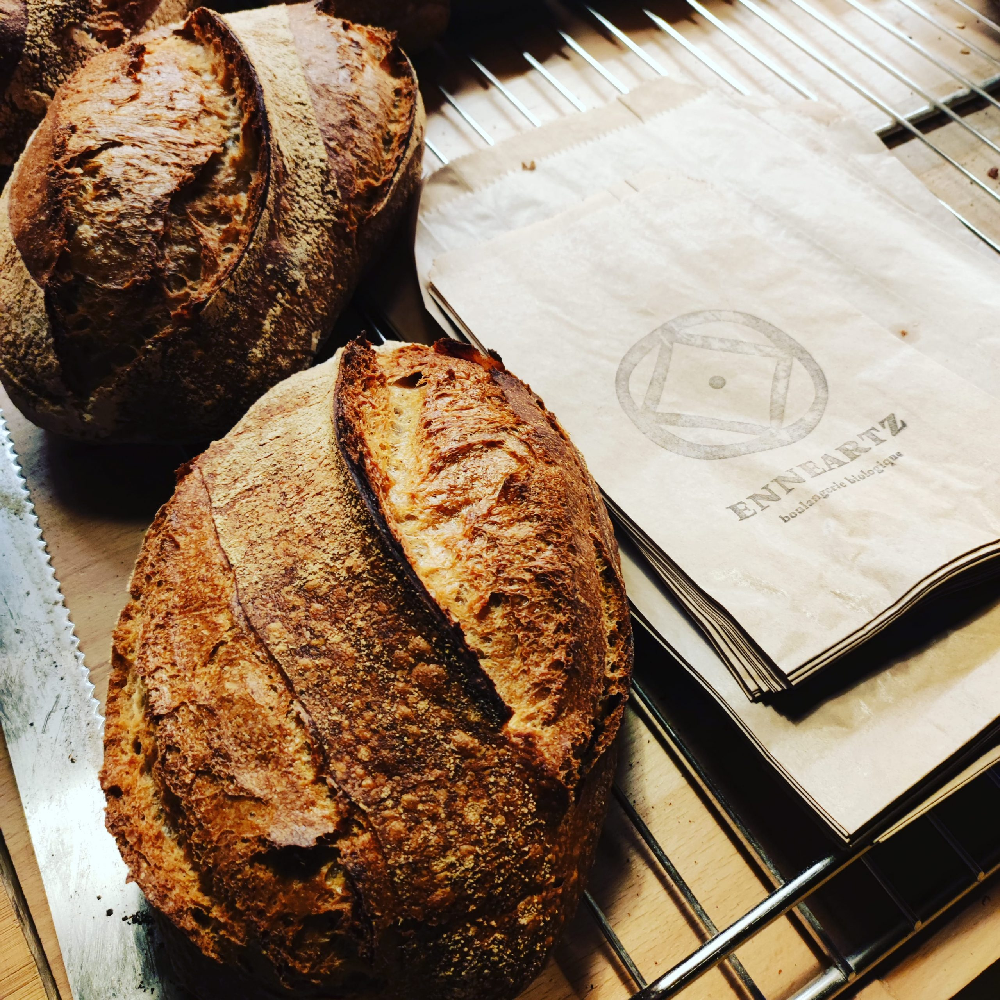
CommercesBoulangerie artisanale basque
VILLAGE Iraty-Biarritz, 4 rue des Mésanges, 64200 BIARRITZ
Avantages
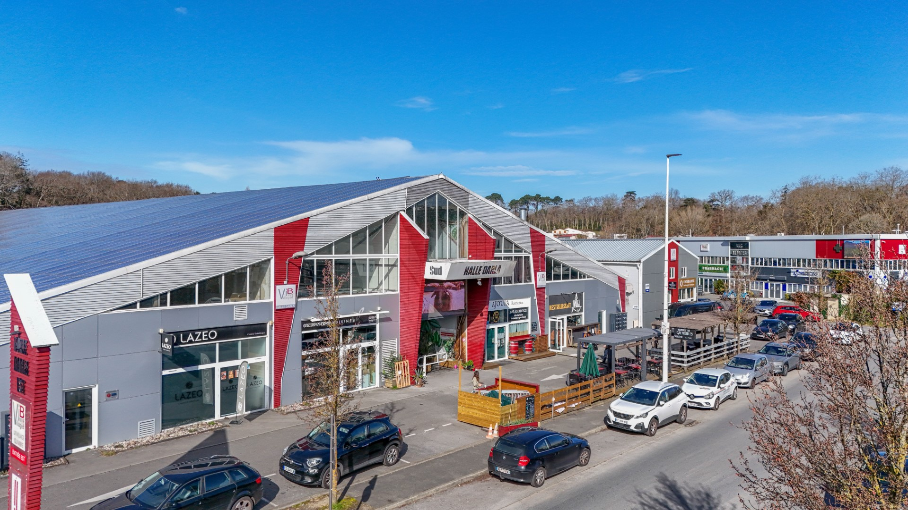
La SEBI maintient des loyers modérés pour favoriser la diversité et l'entrepreneuriat local. Des espaces pensés pour rester accessibles aux artisans, commerçants et créateurs, au-delà des seules logiques de marché.

Aéroport international à 5 min, gare TGV à 5 min, autoroute A63 à proximité. Desservi par 5 lignes de bus. Un carrefour d'accessibilité unique au Pays Basque.
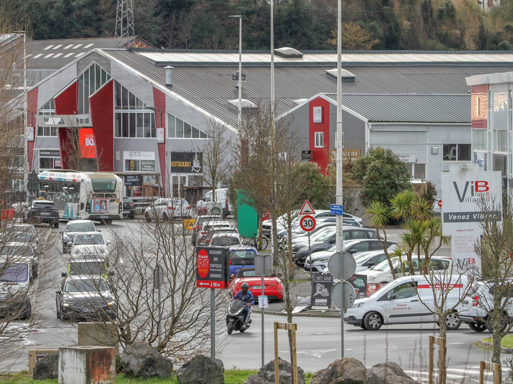
Aide au financement, espaces de coworking, conseils personnalisés. Chaque entrepreneur bénéficie d'un suivi adapté à son projet, du premier rendez-vous à l'installation.
Immobilier
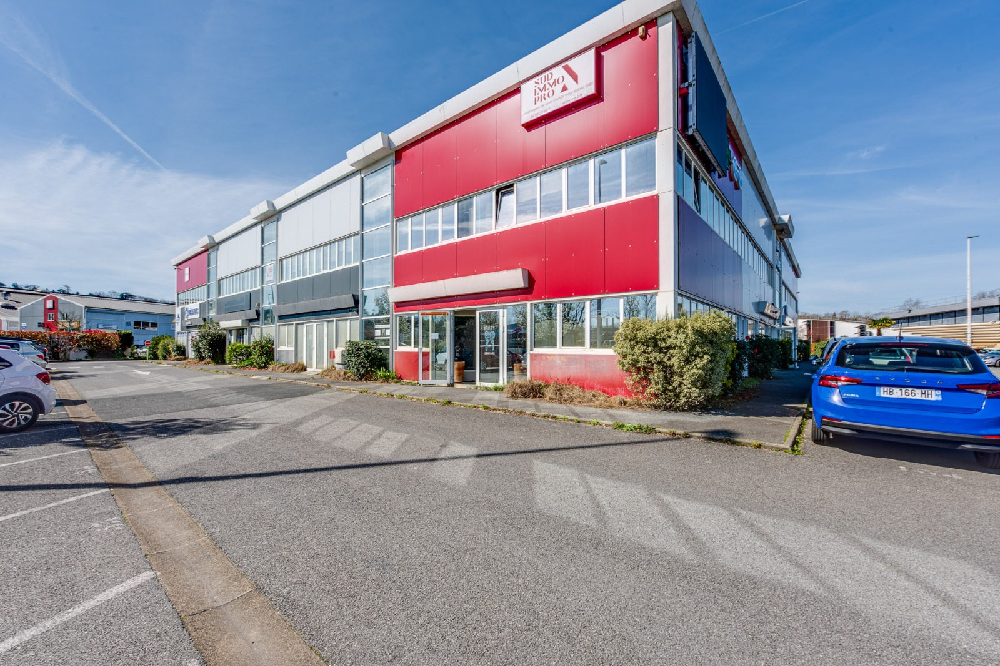
DisponibleLots 7 & 10, Les Aldades
Pôle Santé, Services et Commerces, 8 places de parking incluses.
En savoir plus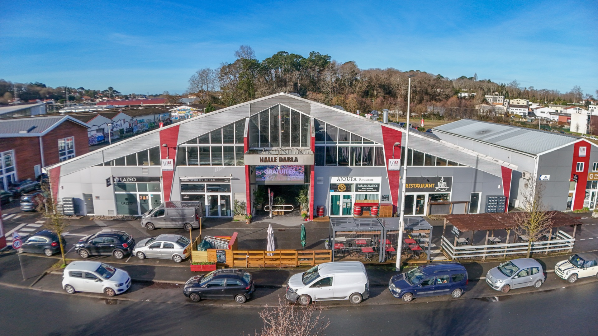
DisponibleLot 38, Halle DARLA (REF-DAR41)
Rez-de-chaussée et premier étage, aménagé, normes PMR.
En savoir plusBlog
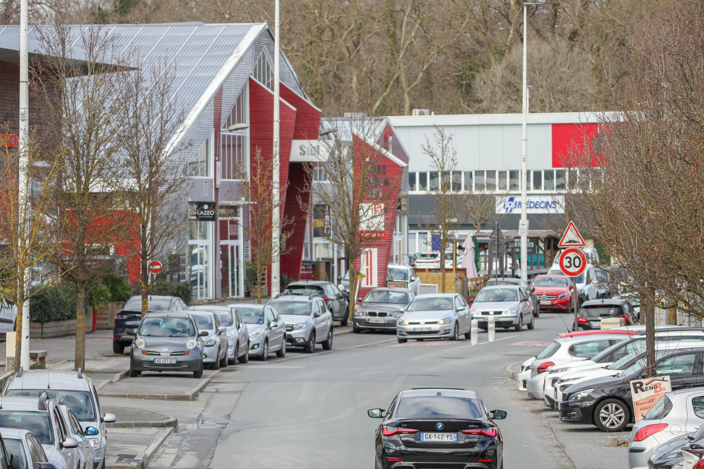
Accessibilité, flexibilité, coûts maîtrisés : les zones d'activités séduisent une nouvelle génération d'entrepreneurs.
Lire l'article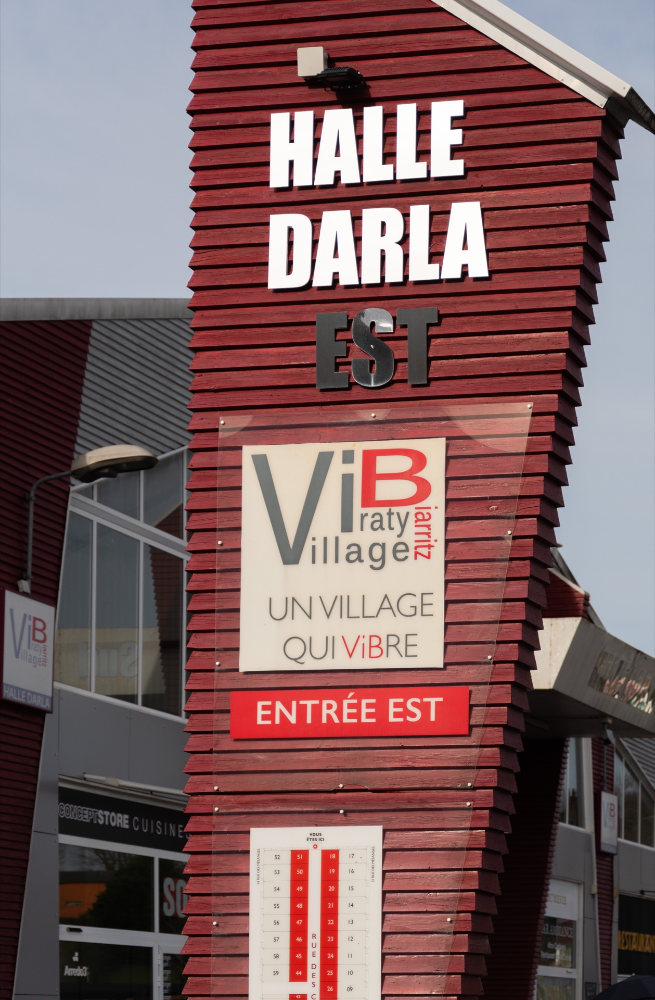
Des ruelles du centre-ville aux ateliers du Village Iraty, BIARRITZ regorge de destinations shopping.
Lire l'article
Le quartier Iraty se transforme en pôle d'activités dynamique, porté par une association fédératrice.
Lire l'article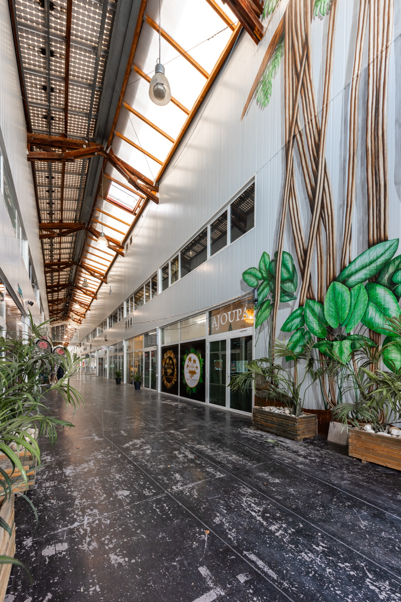
Rejoignez-nous
Des espaces professionnels accessibles dans la zone la plus dynamique de BIARRITZ.